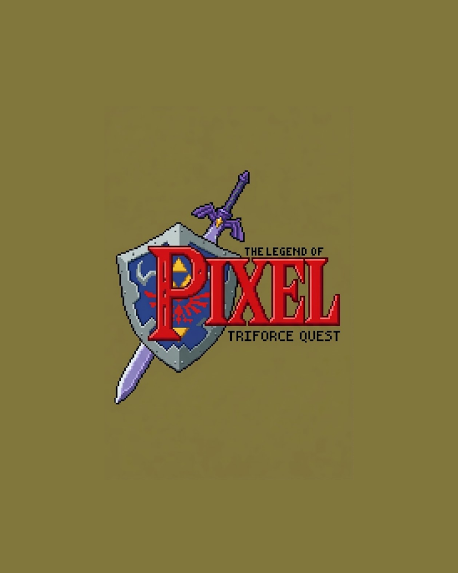
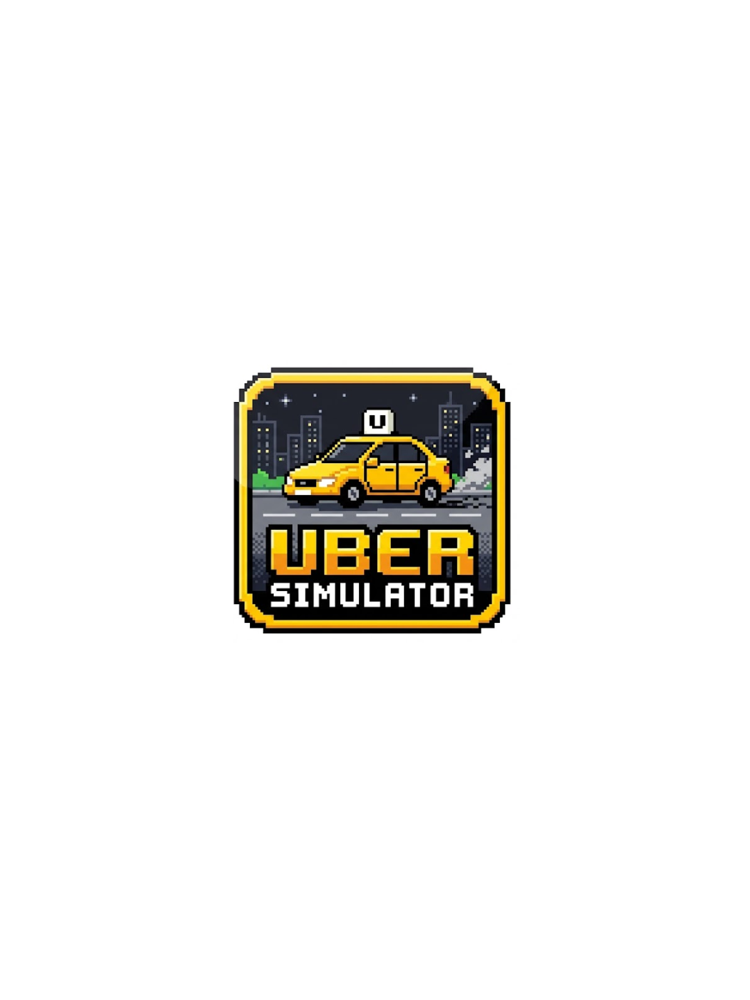

2026
css
js
html
Jogo arcade
Jogo 2D estilo arcade rpg inspirado em the legend of zelda
Desenvolvedor & Social Media focado em criar interfaces digitais marcantes, produtos de alta performance e experiências memoráveis.

2026Jogo 2D estilo arcade rpg inspirado em the legend of zelda

2025Jogo Arcade infinito 2D, simulador de uber
 2026
2026
Marcket place demonstrativo para comprar skins de CS2 e Valorant
Aos 16 anos e no início da minha trajetória profissional, sou movido pela paixão em solucionar problemas complexos por meio de design inteligente e código limpo.
Acredito na simplicidade. Quando não estou criando interfaces, estudo arquitetura de software, design, one ui, one ux e novas tendências tecnológicas.
Estudante do segundo ano do curso, em busca constante de atualização técnica e capacitação alinhada às exigências do mundo profissional.
Trajetória profissional iniciada aos 15 anos como Jovem Aprendiz, com posterior atuação em estágio.
Capacitação profissionalizante com foco em tecnologias web (HTML/CSS), ferramentas do Pacote Adobe, produtividade em Pacote Office e navegação no Windows.
Estou aberto a novas oportunidades e projetos. Envie uma mensagem!